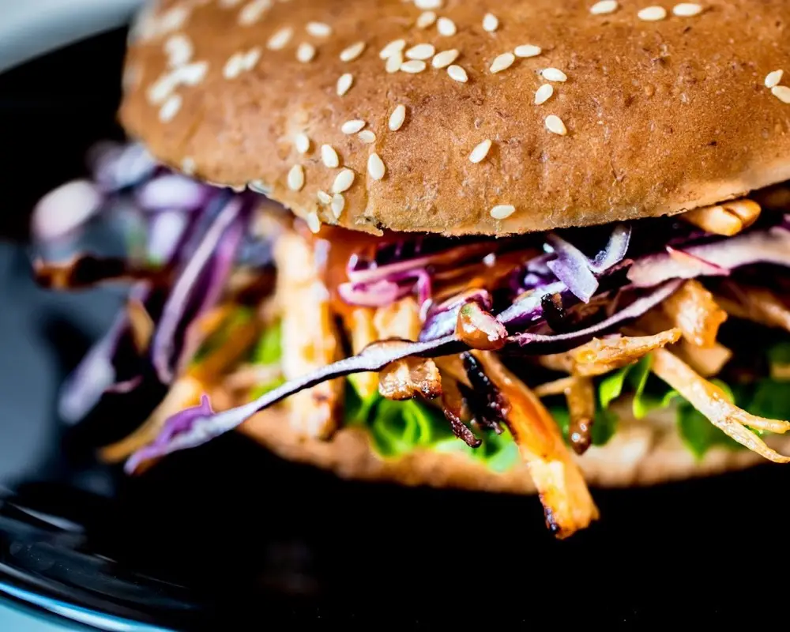
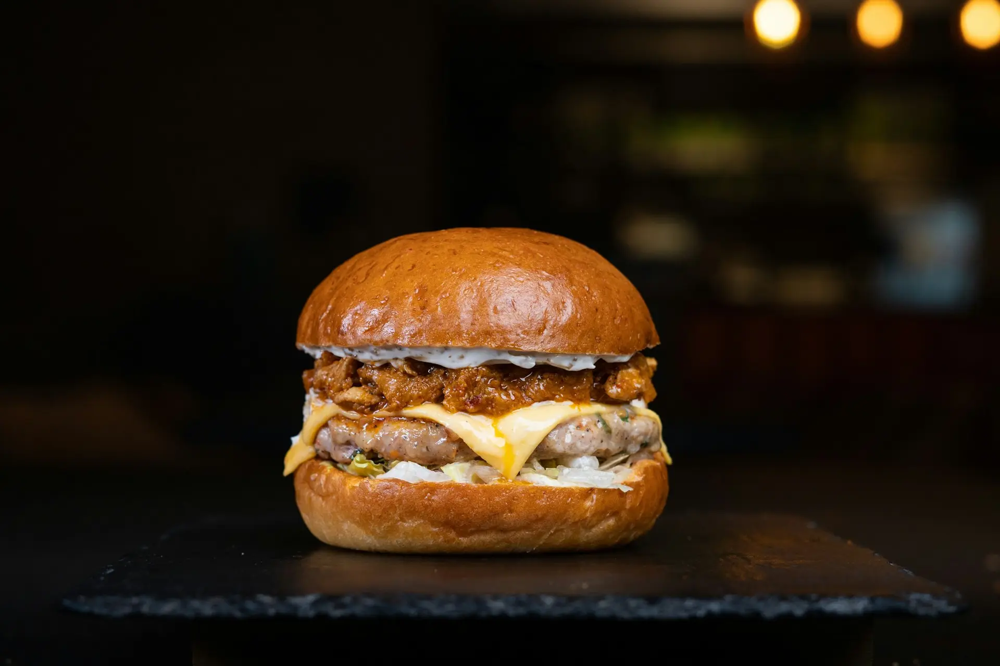
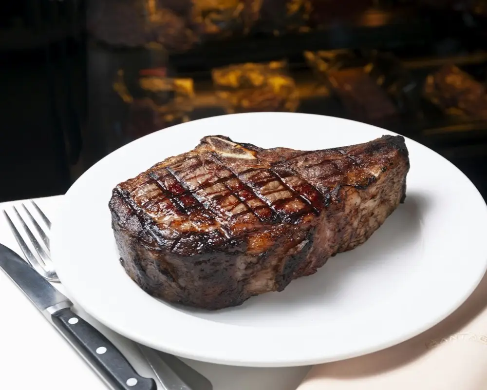
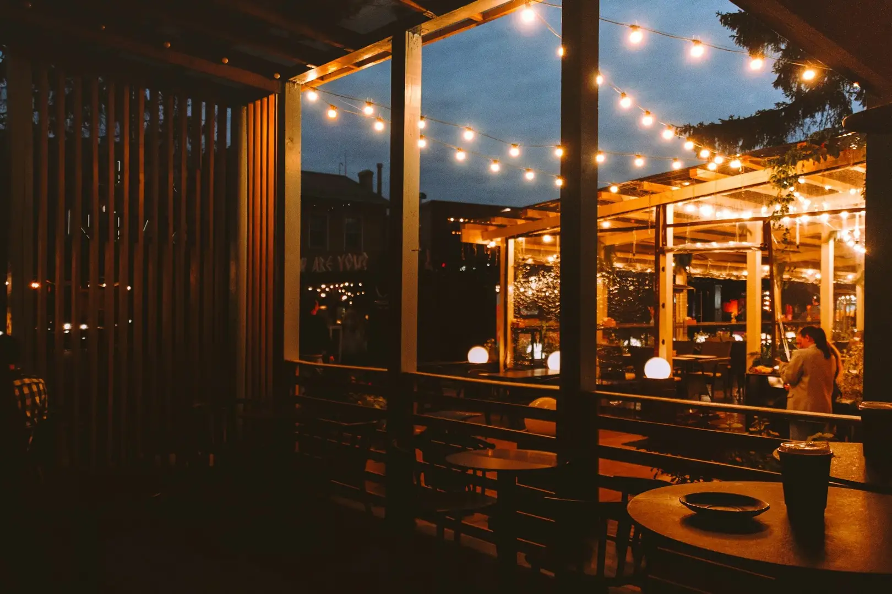

Entre panes
La carne, jugosa: es lo que más se repite en las reseñas.
- Hamburguesa Catedrática
- Hamburguesa Fusión
- Hamburguesa completa
- Hamburguesa americana

Propuesta de diseño para La Fusión. No es su web oficial.
Cocina de siempre y hamburguesas.
En Las Navas del Marqués.
Cerrado ahora

Foto de muestra
La cocina de siempre en una mesa.La Catedrática en la de al lado. Comedor, jardín cubierto y terraza en la avenida de Navalperal. Para comer entre semana o para quedarse toda la tarde del sábado.
Lo que más nombra quien ya ha venido. La carta completa y los precios, en el local o por teléfono.
La carne, jugosa: es lo que más se repite en las reseñas.

Raciones generosas, de las de pedir varias y compartir.

Para ir abriendo boca mientras llega lo demás.
La tarta de queso de Lotus es la más elogiada en las reseñas.
Las fotos son de muestra: no son platos de La Fusión. Si tienes alguna alergia o intolerancia, pregunta por los ingredientes antes de pedir.
El jardín cubierto se agradece cuando en Las Navas refresca; la terraza, los días buenos. Y los fines de semana no cerramos a media tarde: sábados y domingos, de 12:00 a 23:30.

Cerrado ahora
Hoy: consulta la tabla
| Miércoles y juevesHoy | 12:00–16:30 |
|---|---|
| ViernesHoy | 12:00–23:00 |
| Sábados y domingosHoy | 12:00–23:30 |
| Lunes y martesHoy | Cerrado |